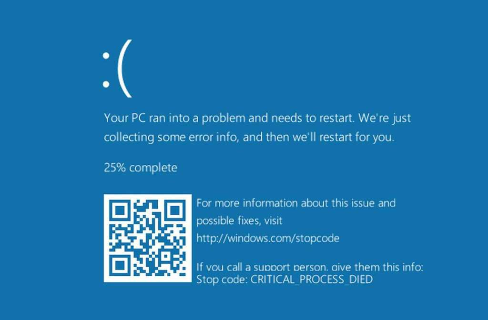

Apagão Cibernético ou Falha da Crowdstrike
-
Um incidente que foi notado como um 'loop de boot' em computadores windows. Ou seja, os PCs crashavam antes de acabarem o boot tendo que ser reiniciados
-
Tela azul da morte

-
Relatos do ocorrido começaram a se espalhar durante a manhã do dia 19/07/24 pela Austrália, Ásia e Amérca com empresas aéreas e aeroportos sendo os mais afetados
-
Inicialmente se imaginou que era uma falha do Windows, parecida com o que aconteceu em 2012, e a Microsoft deu uma declaração de que estava investigando. Porém logo ficou evidente que era uma falha relacionada à atualização do Falcon Sensor, um software de segurança destribuído pela empresa Crowdstrike.
-
Crowdstrike é uma empresa de cíbersegurança com mais de 8000 funcionários e U$ 3 bilhões de receita
-
Falcon Sensor é uma 'solução de segurança unificada', podemos imaginar como um antivírus que tem como pública alvo empresas que querem se proteger de malwares, invasões, ransonwares, etc...
-
Pelo que se entende até agora, o processo de boot do Windows é interrompido porque a solução de segurança estaria conflitando com partes do sistema operacional, algum tipo de incompatibilidade ou falso positivo
-
O problema todo foi composto porque é comum que se habilite a atualização automática de soluções de segurança em desktops e terminais de serviço
-
Até agora não se trabalha com a hipótese de ataque cibernético
-
Mandaram uma atualização dessa importância sem testar? Provavelmente kkkkkkkkkk
-
Já existe uma atualização/rollback corrigindo o problema então a solução é entrar em modo seguro no Windows e deletar o arquivo antigo, para o computador dar boot e permitir a correção

-
Reiniciar várias vezes até que o sistema consiga conectar na internet e atualizar parece que funciona
-
A normalização deve demorar alguns dias pois o processo de recuperação em muitos casos será manual. Neste período deve haver um aumento nos golpes
-
Serviços afetados

-
Um abraço aos profissionais de TI que vão fazer hora extra no final de semana!
Retirado principalmente de: https://www.computerweekly.com/feature/CrowdStrike-update-chaos-explained-What-you-need-to-know
Atualizações 26/07/24
- Análise 'famosa' e 'estranha' do que aconteceu
- Análise que faz mais sentido
- Melhor vídeo sobre o assunto
-
Em resumo:
-
Qualquer erro não tratado num nível tão baixo (ring-0 onde a maioria dos drivers roda) pode causar uma tela azul
-
Atualizações em código ring-0 são muito perigosas e passam por um escrutínio maior, porém o Falcon Sensor trabalha com 'atualizações de definições' que são apenas arquivos carregados pela mesma versão do driver. Um desses arquivos veio corrompido.
-
-
Prova de que um dos artigos estava 'zerado': https://x.com/christian_tail/status/1814299095261147448
-
Sobre o Linux ser mais seguro:
-
O CEO da Crowdstrike tem bastante experiência com situações assim: https://www.businessinsider.com/crowdstrike-ceo-george-kurtz-tech-outage-microsoft-mcafee-2024-7
-
Cartão de U$ 10 dólares https://techcrunch.com/2024/07/24/crowdstrike-offers-a-10-apology-gift-card-to-say-sorry-for-outage/
-
Chorume de extrema-direita. Será mesmo que é a esquerda que politiza as questões?
-
Precisamos de tecnodiversidade: https://www1.folha.uol.com.br/blogs/sou-ciencia/2024/07/o-apagao-da-internet-e-a-tecnodiversidade.shtml